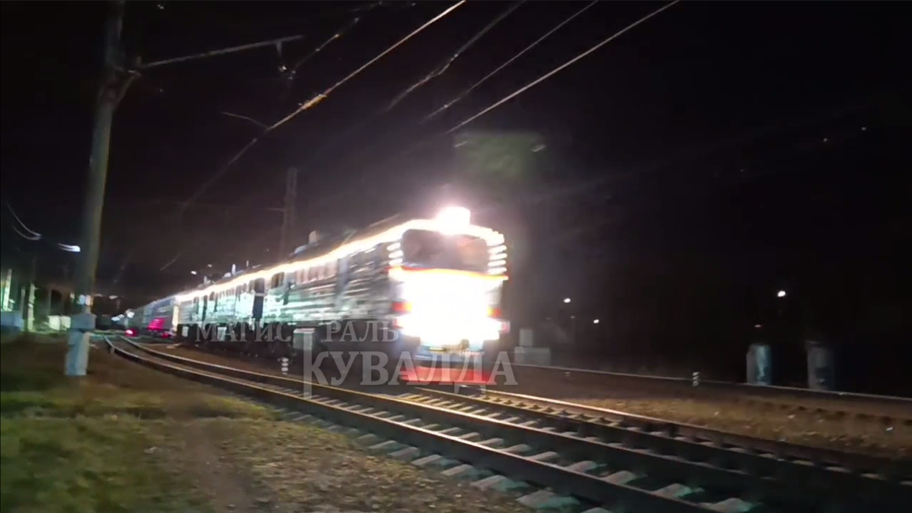

Новость
🚆 Резервный состав для «Поезда Деда Мороза»
Сегодня ночью из Москвы выехал тепловоз 3М62У-0055 с вагонами на помощь «Поезду Деда Мороза», который остался замурован в Республике Коми из-за обрушения моста. Вследствие этого расписание поезда было скорректировано в печальную сторону. Восстановительные работы продолжаются и сегодня, а понадобится ли резервный состав и что будут делать с основным — пока под вопросом. Ранее рассматривалась возможность автоперевозки наиболее ценных вагонов из затрудненного участка.
Тем не менее, воскресной ночью резервные вагоны и тепловоз 3М62У-0055 для «Поезда Деда Мороза» отправились с Киевского вокзала в сторону Кирова.
В состав вошли:
- 3 вагона в корпоративном окрасе РЖД.
- 6 вагонов от туристического поезда «Жемчужина Кавказа».
- 2 вагона «Поезда Деда Мороза».

📌 Место неизвестно.
Резервный состав для «Поезда Деда Мороза».